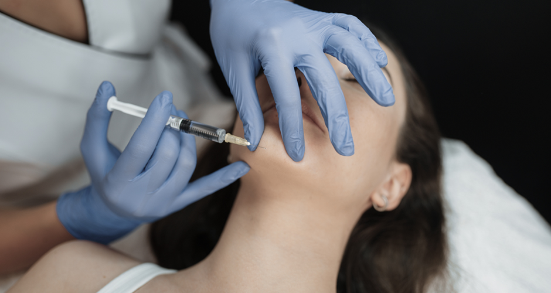
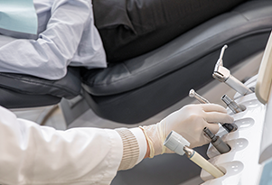
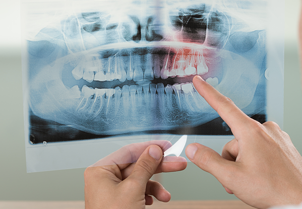
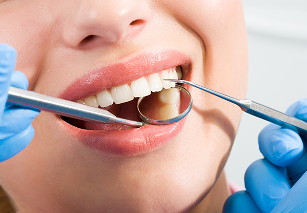

초기 상담과 진단
환자의 증상과 의료 이력, 치료 목표를 평가하기 위한 첫 상담을 진행합니다. 보톡스 치료가 적합한지 판단하고 예상되는 결과와 부작용을 자세히 설명합니다.
사각턱과 이갈이 개선을 위한
맞춤 보톡스 시술을 진행합니다
<%=m_client_en%>
근육의 크기를 줄여 치아와 턱관절을 보호하는 교근축소술
보톡스는 주름치료의 목적으로 사용해 오다가 근육의 크기 축소 효과가 발견되면서
치과 영역에서도 응용이 되고 있습니다.
여러가지 구강내과적인 질환, 턱관절, 이갈이, 이악물기 등으로 교근이 비대해진 경우
과도한 저작력으로 치아에 손상이 발생할 뿐만 아니라 턱관절에 무리를 주고
저작근 주위의 근막통증을 야기하는 경우에는 교근축소술이 좋은 치료방법이 될 수 있습니다.


환자의 증상과 의료 이력, 치료 목표를 평가하기 위한 첫 상담을 진행합니다. 보톡스 치료가 적합한지 판단하고 예상되는 결과와 부작용을 자세히 설명합니다.

환자의 상태와 요구에 맞춰 개별화된 치료 계획을 수립합니다. 이 과정에서 주사할 근육의 위치와 보톡스 용량, 치료 빈도를 세밀하게 결정합니다.

치료 부위를 깨끗하게 소독하고 필요한 경우 국소 마취제로 통증을 최소화합니다. 환자에 따라 마취 없이도 편안하게 치료를 진행할 수 있습니다.

미세한 바늘을 사용해 사전에 결정된 위치에 보톡스를 정확하게 주입합니다. 주사 과정은 대부분 몇 분 내에 빠르고 간단하게 완료됩니다.

주사 후에는 몇 시간 동안 무리한 활동을 피하는 것이 좋습니다. 치료받은 부위를 강하게 문지르지 않도록 각별히 주의하는 것이 권장됩니다.
치료 후에는 효과를 면밀히 평가하고 필요한 경우 치료 계획을 조정합니다. 이는 최적의 결과를 얻기 위해 반드시 거쳐야 할 중요한 단계입니다.
이갈이 습관이
있는 경우
자신도 모르게 이를
악무는 습관이 있는 경우
씹는 힘이 강해 치아·턱관절
보호가 필요한 경우
턱근육 비대칭으로
안면 비대칭인 경우
턱근육이 발달해
사각턱으로 보이는 경우